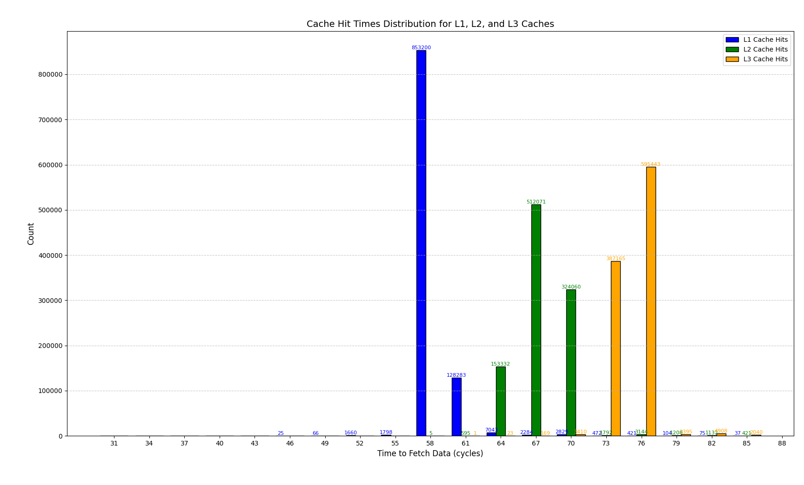
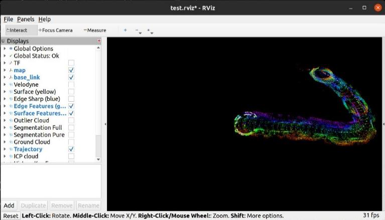
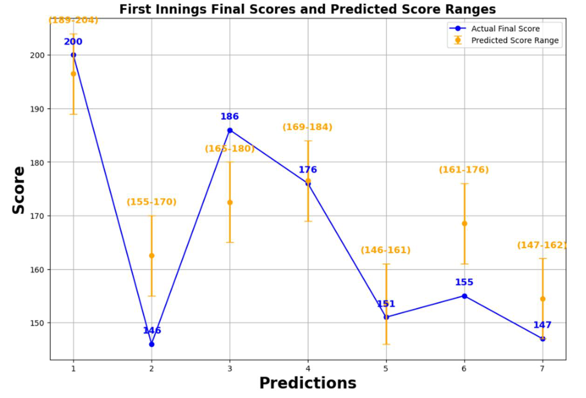
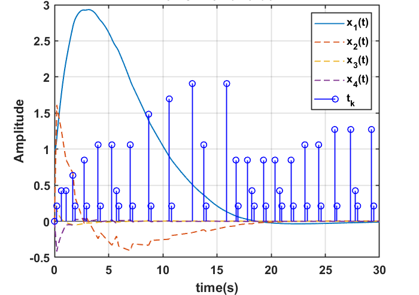

Projects

Multiview 3D Reconstruction
Northeastern University | Dec 2024
- Improved the clarity of 24 images by applying CLAHE in OpenCV, enhancing feature detection capabilities with SIFT
- Determined camera positions and refined 3D reconstruction accuracy using bundle adjustment in GTSAM
- Achieved a 51.77% enhancement in accuracy of initial estimates through optimization with the Levenberg-Marquardt algorithm in GTSAM

Cache Timing Analysis on x86 and ARM Architectures
Northeastern University | Group of 3 | Dec 2024
- The project conducted a detailed comparative analysis of memory access latencies at different levels of the memory hierarchy (L1, L2, L3 caches, and main memory) across x86 and ARM AArch64 architectures.
- Utilized advanced timing tools and controlled experiments on COE Linux systems to ensure precise and consistent measurement of memory access latencies across both architectural platforms.
- Highlighted how architectural differences such as cache organization, associativity, and prefetching mechanisms affect performance, particularly in memory-bound applications.
- Provided insights into potential optimization strategies that can help developers and system architects enhance performance across heterogeneous computing environments.

Comparative Analysis of LiDAR based Mapping
Northeastern University | Group of 4 | Mar 2024 - Apr 2024
- Conducted a comparative study of two advanced LiDAR-based 3D mapping techniques, LeGO-LOAM and LIO-SAM, assessing their performance, accuracy, and computational efficiency in autonomous localization and mapping for intelligent robotics.
- Implemented and evaluated the LeGO-LOAM and LIO-SAM algorithms using both real-world (KITTI dataset) and simulated (Gazebo environment) datasets to determine their effectiveness in different mapping scenarios, emphasizing their adaptability and precision in dynamic environments.
- The analysis revealed distinct advantages of each algorithm, with LeGO-LOAM excelling in resource-constrained situations due to its lightweight design, and LIO-SAM showing superior mapping accuracy through robust sensor integration, particularly under fast-paced and dynamic conditions.
- Demonstrated the potential of integrating these sophisticated SLAM technologies into real-world robotic systems, highlighting their capacity to enhance navigation and localization tasks in complex environments, and paving the way for their use in advanced autonomous systems.
- Proposed enhancements to further improve the algorithms through advanced sensor fusion techniques, aiming to optimize accuracy and reliability in robotic navigation and mapping, which will contribute to broader applications in robotics and autonomous vehicle systems.

Indian Premiere League (IPL) Score Prediction
Northeastern University | Group of 3 | May 2024 - Jun 2024
- Developed a predictive model for forecasting match scores in the Indian Premier League (IPL) using various machine learning techniques. The project involved comprehensive data collection, preprocessing, feature engineering, and training multiple models to compare their effectiveness.
- Utilized historical data from 2008 to 2017, encompassing over 500 matches. Employed feature engineering to enhance predictive accuracy by incorporating player performance, venue characteristics, weather conditions, and match specifics like toss results.
- Trained and evaluated several models, including Linear Regression, Decision Trees, XG Boost, Ada Boost, and Support Vector Regression. Each model's performance was rigorously analyzed to identify the most efficient method in predicting IPL scores based on predefined metrics.
- The comparative analysis highlighted the strengths and limitations of each model, with Linear Regression establishing a baseline for simplicity and interpretability, while ensemble methods like XG Boost and Ada Boost showed potential for handling complex data interactions.
- The study concluded with actionable insights for team strategists and sports analysts, emphasizing the practical applications of the developed models in real-time predictions and strategic planning in sports analytics and betting industries.

Periodic Switched Event-triggered Schemes for Networked Control Systems
PES University | Group of 4 | Jan 2022 - Dec 2022
- Developed innovative control schemes—Periodic Switched Event-Triggered (PSET) and Periodic Continuous Mixed Switched Event-Triggered (PCMSET)—to enhance efficiency in Networked Control Systems by reducing unnecessary data transmissions and conserving bandwidth.
- Introduced novel methodologies that integrate periodic sampling with event-triggered control, significantly minimizing communication demands and preventing frequent system checks that lead to Zeno behavior.
- Employed rigorous simulations to demonstrate that the proposed schemes outperform existing methods by reducing transmission counts by at least 30%, thereby optimizing network resource usage.
- The schemes offer practical benefits for real-world systems, improving reliability and operational efficiency in networked control environments.
- Highlights the potential for further exploration into mixed event-triggered mechanisms, setting the stage for subsequent innovations in the field.